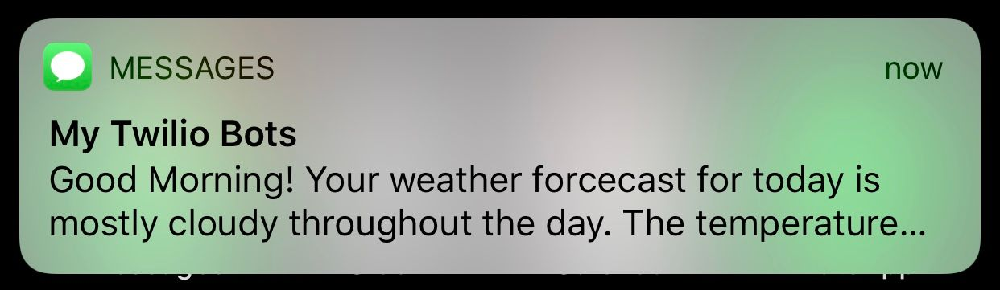
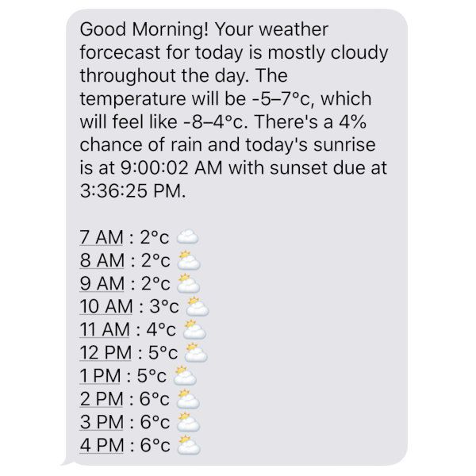

Personal Weather Forecast
tl;dr Personal Weather Forecast is a small JavaScript program that mashes together Dark Sky's API with Twilio's APIs to produce a personally tailored weather forecast and sends it to you as a text message every morning. The source code is available as a project on GitHub, here.

If you want to receive your own personal weather forecast every morning...
- check out the repository to a computer you'll leave switched on—such as a DigitalOcean droplet, or a Raspberry Pi home server
- create a script similar to the one below
- save it somewhere accessible from your logged-in user on your server, such as
~/bin/forecast-sms.
#!/bin/sh
export DARKSKY_KEY=[your-darksky-key]
export DARKSKY_LATLONG=[the-location-for-the-forecast]
export TWILIO_ACCOUNT=[your-twilio-account-sid]
export TWILIO_TOKEN=[your-twilio-auth-token]
export TWILIO_FROM=[your-twilio-phone-number]
export TWILIO_TO=[your-destination-phone-number]
pushd /[repo-location]/personal-weather-forecast >/dev/null
node main.js
popd >/dev/nullTo make it run every morning, you should edit your user's crontab which with the following command...
$ crontab -e...and add the following line...
0 7 * * 1-5 ~/bin/forecast-sms...which references the location of the previously saved script. This cron entry means that every Monday to Friday morning at 7am you'll receive your very own personal weather forecast!

Discussion
If you want to leave a comment or discuss this post, please reply to my tweet below!